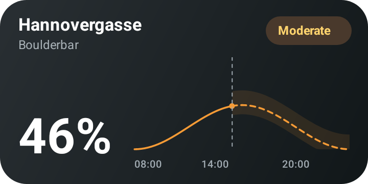
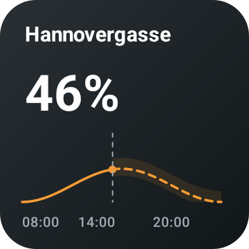
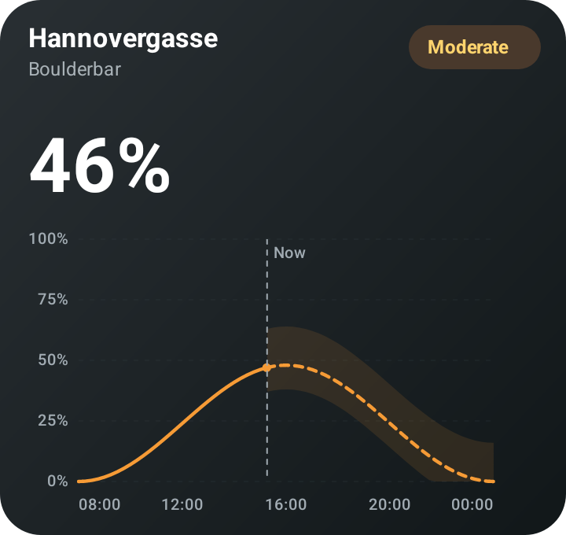

Boulderbat widgets for Android
Exact native Canvas renders from the Android instrumentation tests. These are sample-data fixtures showing the recorded-to-forecast transition and 80% range, not live occupancy. Launcher sizing and refresh behavior are tested separately.

Wide · 360 × 180 dp

Small · 180 × 180 dp

Large · 360 × 340 dp
In the app: Settings → Preview widgets. Choose any gym to see its current data.